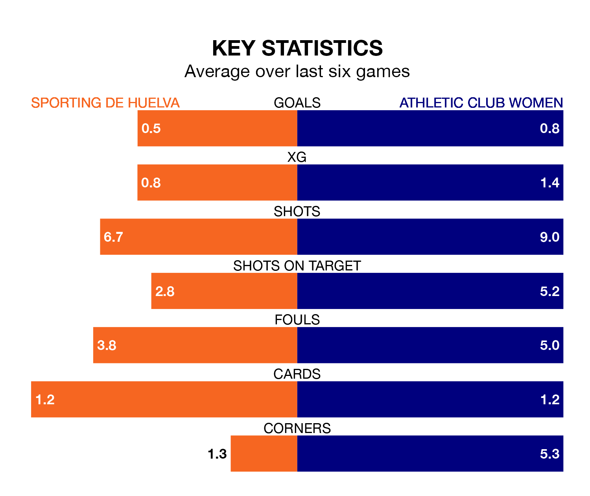

Athletic Club Women are strong favourites to take all three points despite Sporting de Huelva's home advantage in Sunday's late match at Campo Federativo de la Orden.
*Betting Company* are offering odds of 1.81 on Athletic Club sealing the win, with the visitors sitting ninth in Liga F table.
Sporting, who are 16th in the league and 16 points behind Athletic Club, are priced at 3.85 to win. A draw is set at 3.25.
Sporting are in bad form in Liga F, with one win and five losses from their last six games.
With two wins and two draws over that period, Athletic Club's form is better – they have taken eight points from 18, compared to the hosts' three.
In the last 10 years, Sporting and Athletic Club have played each other on 19 occasions. Sporting won three of them, Athletic Club 10, and they drew six times.
On average, Sporting scored 0.7 goals and Athletic Club 2.1 in those matches.
Their last meeting was on October 9, when Athletic Club won 3-0 at home.
In Adriana Nanclares Romero, the away team can rely on one of the league's safest pair of hands. She has kept four clean sheets in her 10 appearances this season in Liga F.
In Sporting's net, Zala Meršnik has one clean sheet in 11 games. She has conceded a goal every 45 minutes, 80% more often than the 82 minutes between goals for Nanclares Romero.
With nine goals in 16 games so far this season, Sporting are the league's lowest scorers with 0.6 goals per game. And they are conceding more than average, letting in 36 goals at a rate of 2.2 per game.
Athletic Club are also below average scorers, with 0.9 goals per game, compared to a league average of 1.6. They have conceded 1.4 goals per game.
Sporting's last match was on February 4, a 4-0 loss against Barcelona Women.
Athletic Club lost 2-0 against Granada Women last time out, on February 3.
Updated: 11:18 (UTC), 08/02/24